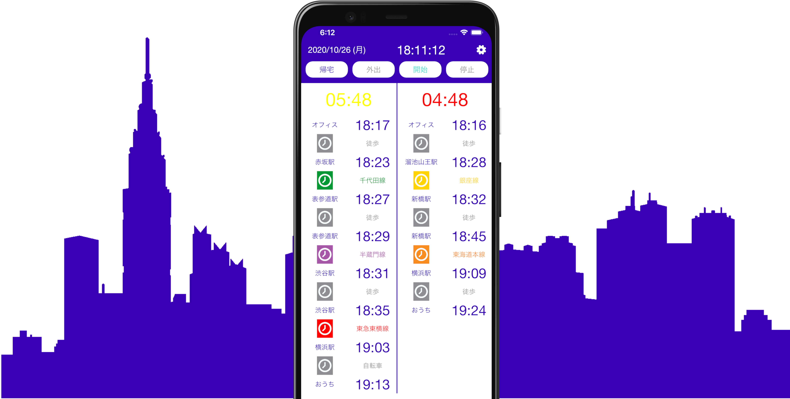
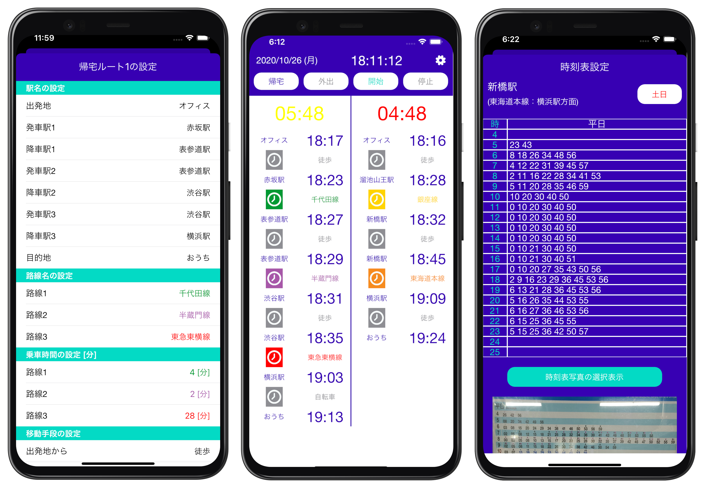

My Transit Makers
Home
Support Center
Terms of Use and Privacy Policy
My Transit Makers
Let's Elevator
Study Phonics
Create your own
personal transit guide
for your daily commute

Features
Countdown until departure
Comparison two routes at the same time
Going home route and outgoing route
Weekday timetable and weekend timetable

Download Now